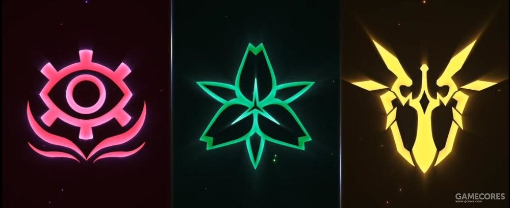

而当“崩坏”过后会从中所溢出一种导致生命体变异的能量，这种能量被称为“崩坏能”。
受到侵蚀的野兽会变成以人类为食的“崩坏兽”。
极少数的人类受到感染后会成为“拟似律者”，它们的能力远远超出死士与崩坏兽，接近律者。因为它们的诞生，并不像律者集中受到大量感染。所以它们的体内无法形成律者核心。八重樱则是一种另类，因为她被封印了500年，在此期间“崩坏能”不断在体内积蓄，造成“律者核心”完成。
“律者”拥有作为人类的一部分扭曲意识并拥有更强大的力量。崩坏能在律者体内集中形成“律者核心”。
每一次发生“崩坏”都会产生一名“律者”，据初代人类的研究资料表示，一共会出现十四位“律者”。而“最后的律者”的能力远超所有律者，等待人类的只有灭亡。
1952年，德国发生了一次特殊的“崩坏”，在此次“崩坏事件”中诞生了“第一名律者”—瓦尔特。“天命组织”在经历了这次“崩坏”以后紧急加速对其研究。这次“崩坏”被定为“第一次崩坏”。
此次”特殊崩坏事件“，诞生了一名”男性律者“（初代人类的资料中，律者都为女性）。瓦尔特成为律者后，并没有对人类进行大规模屠杀。反而运用律者的能力，修复了所有“崩坏”所造成的破坏。
1999年，西伯利亚——第二次崩坏，在此次事件中诞生了第二名律者—西琳。西琳在天命部队的核弹攻势下死亡。其“律者核心”被破坏成了四块宝石：征服宝石（雷电），疾疫宝石（烈焰），渴望宝石（风暴），静谧宝石（死亡）。
2014年，长空市——第三次崩坏，《崩坏学园2》与《崩坏3rd》的故事也由此展开。在这一次崩坏中的“律者”为雷电芽衣，但在琪亚娜的帮助下暂时摆脱了崩坏能的控制，“第三律者”——雷电芽衣暂时处于封印状态。
曾经初代人类创造了一个顶尖的文明，除了“律者”，其他的“崩坏种类”无法对他们造成威胁
在初代人类的世界并没有政府的概念，而是由一家大企业管控。在这家企业有位叫作“MEI”的科学家是当时最顶尖的人才，几乎所有对抗“崩坏”的研究资料与产品都出自于她的手。
MEI博士的发明了，利用“律者核心”残片制作的“对律者武器”，也就是我们在游戏所见到的以编号命名的“圣遗物”。
随着MEI博士的深入研究，最终开发出了更强大的“神之键”。与量产型武器不同的是，“神之键”使用整块“律者核心”制作，所以更强大。
终焉还是降临了，人类终于没有抵抗住“崩坏”的攻势，初代人类的文明也就此告终。而MEI博士的研究也从“如何对抗崩坏”变成了“如何将人类延续下去”。
所以，光有武器是远远不够的，使用武器的人死亡，那么武器与废铁无异。MEI博士另一项伟大发明则是能够“延续”的东西—“圣痕”。
沧海桑田，时间飞逝。“崩坏”对人类的恨，人类对“崩坏”的恨，丝毫没有减退过。为了抵御“崩坏”，具有天赋的人类集合在一起，组成了“天命”。
天命组织”成立于1470年，其成立目的为对抗“崩坏”保护人类。支撑其运作的有三大家族。

所谓“天然圣痕”是初代人类将他们的科技与知识转录为基因片段，通过遗传物质（DNA）作为载体不断流传下去。圣痕中记载着大量远超现代科技知识与力量。且各自拥有不同的特征与能力。但圣痕中的科技都是靠崩坏能驱动的，所以圣痕持有者都具有极强的崩坏能抗性。
“阿波卡利斯”的家主—奥托·阿波卡利斯，发现了“圣痕”的这些特征以后，便着手研究“人工抗体”与“人工圣痕”。在上述中的“沙尼亚特家族”和“卡斯兰娜家族”就是拥有“崩坏抗体”的一族，“天命组织”获得两族人的抗体样本，经过漫长的研究终于完成了注射方式的“人工抗体”。以及，基于“人工抗体”制作的“人工圣痕”。但由于无法提取“天然圣痕”的样本，导致“人工圣痕”的不完整。不仅在性能上劣于“天然圣痕”，还会严重缩减使用者的寿命。
由于“人工圣痕”的不完美，“天命”为了得到最完美的战士对抗崩坏。“沙尼亚特家族”的塞西莉亚与“卡斯兰娜家族”的齐格飞在组织的命令下，缔结了婚姻。随后，塞西莉亚产下一女，由后来的”圣芙蕾雅学园”院长德丽莎·阿波卡利斯取名为琪亚娜·卡斯兰娜。但“沙尼亚特家族”天然的“崩坏源控制力”并未在童年的琪亚娜身上得以体现。虽然组织表面上认定琪亚娜为“失败品”，但仍然暗中监视着。
2014年第三次崩坏爆发，无量塔姬子指挥“休伯利安号”前往长空市。在那里，姬子发现了琪亚娜，芽衣和布洛妮娅，并带回了“圣芙蕾雅学园”。德丽莎以齐格飞的下落为筹码，使得琪亚娜留在学园成为女武神。